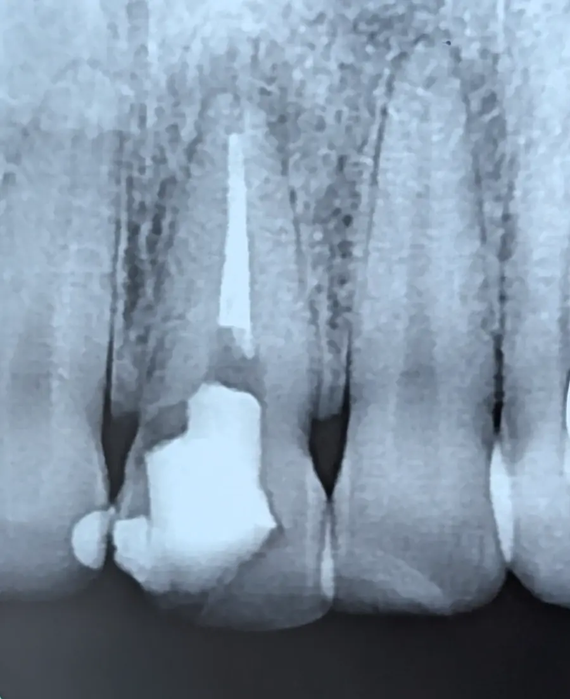
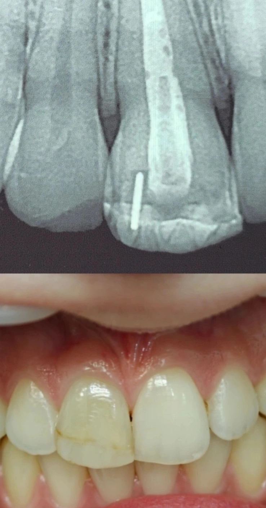

نسخه استخراجشده؛ ترجمه یا تأیید علمی انجام نشده است. وضعیت: captured
بیمار برای دندان ۱ آمده است. یک ترمیم کامپوزیت وسیع دارد که هم فرم و هم رنگش نامناسب است. میگوید این دندان بارها کامپوزیت شده ولی هنوز راضی نیست، و برای زیبایی روکش میخواهد.

در پریاپیکال، تخریب وسیع داخلی دیده میشد و دیوارهی مزیال خیلی نازک بود. دندان از داخل تخریب شده؛ برای روکش باید از بیرون هم تراشید و همان دیوارهی نازکی هم که مانده از بین میرود. یعنی روکش در این شرایط عمر دندان را کم میکند، نه زیاد. برخلاف تصور بیمار که روکش را راه نجات میبیند، اینجا روکش خودش عامل تضعیف است.
به بیمار گفته شد بهجای روکش دنبال ترمیم باشد. گفت ترمیم زیاد کرده و راضی نبوده. پاسخ این بود: مشکل صرفِ ترمیم بودن یا نبودن نیست، بلکه اصولی انجام شدن آن است. بیمار به متخصص ترمیمی معرفی شد تا یک درمان ادهزیو اصولی برایش انجام شود.
گاهی خواستهی بیمار (روکش برای زیبایی) دقیقاً همان کاری است که به دندانش بیشترین آسیب را میزند. و نارضایتی از ترمیمهای قبلی به معنی نادرست بودن گزینهی ترمیم نیست؛ گاهی مشکل در اجرا بوده، نه در انتخاب درمان.
بیمار دیگری با سابقهی ضربه به دندان قدامی، درمان ریشه و ترمیم کامپوزیت آمده است. شکایتش تغییر رنگ دندان است؛ به او گفتهاند راهحل روکش است و با همین درخواست آمده. کار این ویزیت اجرای آن درخواست نیست؛ بررسی این است که آیا در این مرحله روکش لازم است یا نه.

روکش در این مرحله دو هزینه دارد: حذف ساختار و تکسچر سالم، و وارد کردن بیمار به مسیر درمانهای تهاجمیتر؛ چون بعد از تراش راه برگشتی نیست و هر مشکل بعدی از سطح بالاتری از مداخله شروع میشود. در مقابل، علت مشخص است و گزینهی کمتهاجمتر هنوز امتحان نشده.
بیمار برای بلیچینگ داخلی (internal bleaching) و تعویض ترمیم کامپوزیت به متخصص ترمیمی ارجاع شد. از این نقطه تصمیم با اوست: اگر بلیچینگ داخلی را مناسب بداند انجامش میدهد و اگر لازم بداند درمان ریشه را بازبینی یا تکرار میکند. اگر این مسیر شدنی نباشد، بیمار برای روکش برمیگردد.
وقتی بیمار با تشخیص آماده و درخواست مشخص میآید، اولین کار پذیرفتن آن درخواست نیست. تراش یک تصمیم یکطرفه است؛ فرصت برای روکش کردن همیشه هست، برای برگرداندن ساختار تراشیدهشده نیست.